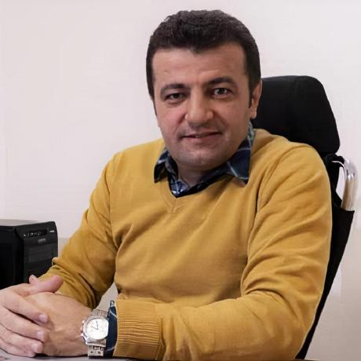
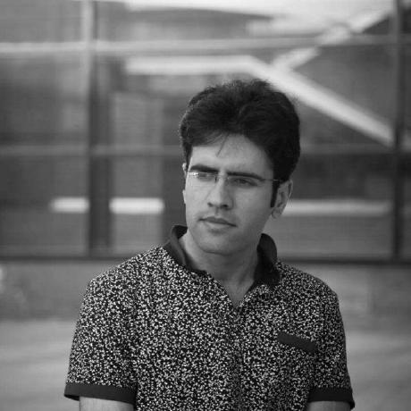
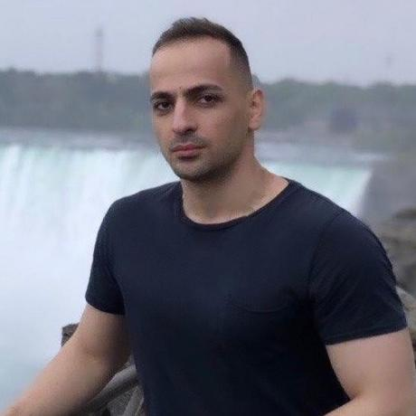
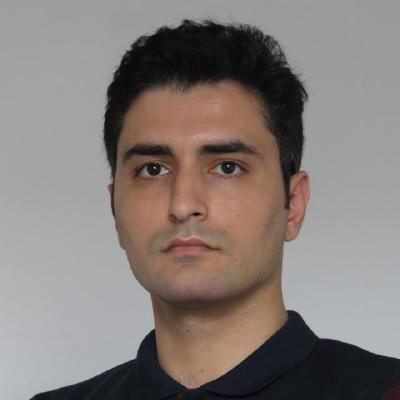
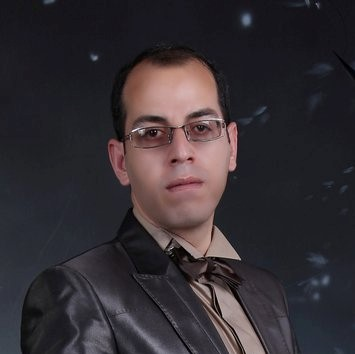
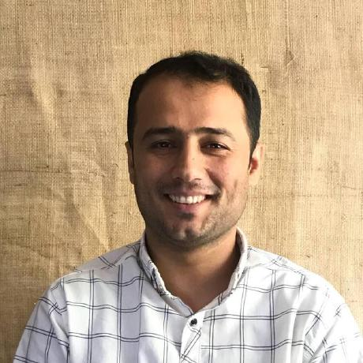
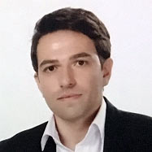
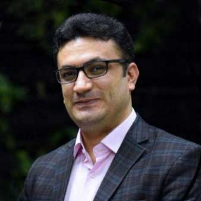
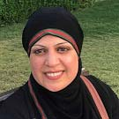

AsoSoft Group Members

Dr. Hadi Veisi
- Ph.D in Computer Engineering, Sharif University of Technology, Tehran, Iran, 2011.
- Faculty member at Faculty of New Sciences and Technologies (FNST) of University of Tehran.
- Research Interests:
- Digital Signal Processing
- Speech Processing (speech recognition, speech enhancement, speech synthesis, speaker recognition)
- Pattern Recognition
- Artificial Neural Network
- Fuzzy Logic and Fuzzy Systems

Mohammad MohammadAmini (Aran Amini)
- Ph.D. Student in Computer Science, Avignon Université, Avignon, France.
- M.Sc. in Information Technology, Tarbiat Modares University, Tehran, Iran, 2018.
- Research Interests:
- Soft Computing(Fuzzy logic and Fuzzy Systems, Artificial Neural Networks, Evolutionary Computing)
- Natural Language Processing

Hawre Hosseini
- Ph.D. Student in Computer Science, Ryerson University, Toronto, Canada
- Research Interests:
- Natural Language Processing
- Question Answering Systems
- Semantic Technologies
- Data Mining
- Social Network Analysis

Aso Mahmudi
- Master in Computational Linguistics, University of Tehran, Tehran, Iran, 2019.
- Research Interests:
- Computational Linguistics
- Natural Language Processing
- Kurdish Grammar

Morteza Naserzade
- Master in Computational Linguistics, Sharif University of Technology, Tehran, Iran, 2018.
- Research Interests:
- Kurdish Grammar
- Computational Linguistics
- Natural Language Processing

Arash Amani
- Master in Artificial Intelligence, Science And Research Branch Islamic Azad University, Tehran, Iran, 2018.
- Research Interests:
- Artificial Intelligence
- Natural Language Processing

Wirya Fathy
- Ph.D. Student in Information Technology, University of Tehran, Tehran, Iran
- Research Interests:
- Deep learning
- Speech Recognition

Farhad Rahimi
- Ph.D. Student in Computer Software Engineering, University of Arak, Arak, Iran
- Research Interests:
- Deep learning
- Speech Recognition
- Data Science
- Text to Speech
Abdulhady Abas
- Master's student in Artificial Intelligence, University of Soran, Kurdistan.
- Research Interests:
- Artificial Intelligence
- Natural Language Processing
- Speech Recognition

Sabat Salih
- Master's student in Artificial Intelligence, University of Soran, Kurdistan.
- Research Interests:
- Artificial Intelligence
- Natural Language Processing
- Text to Speech